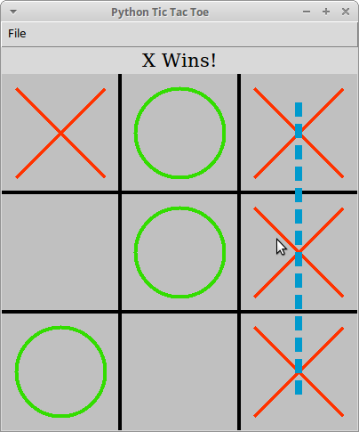

The repository for this project can be found here.
This game is written for Python 2.7 and needs the Python Tkinter package to be installed to run. Simply run the TTT.py file to start the interface.
The game can be played by clicking the appropriate box corresponding to the move the player wishes to make. When the game has finished, a line over the three pieces that formed the winning row, if either player has won, or a "C" for cat (tie) will be drawn. The label above the board will also update as the game progresses.
At any time a new game can be started by choosing the desired option under File->"New Game".
The game currently allows the human player to compete against a computer AI. The "Computer vs Human" option allows the computer to move first, and the "Human vs. Computer" option allows the human player to move first. There are three levels of difficulty for the AI in either case:
AI chooses moves randomly.
AI chooses moves randomly but will choose a winning move if one happens to develop. Also a one in three chance that it will purposely choose to block an opponent's winning move if one exists.
AI uses strategy that should result in a tie if no human mistakes are made.
This game was tested using Xubuntu and Mac OS X systems.